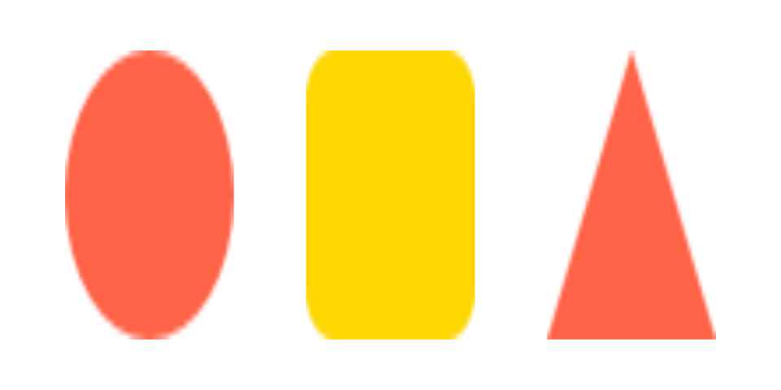
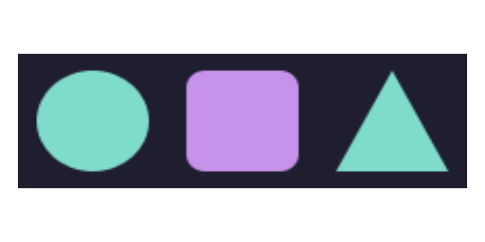
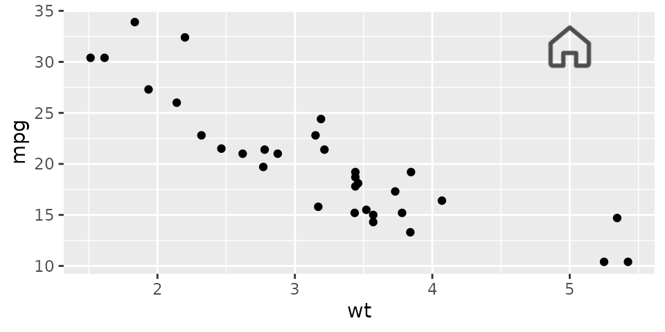

zusvg draws SVG icons and logos to pixels with two small C libraries
compiled into the package, so it needs no system library. It draws
shapes, paths, strokes, gradients, <use> and
<symbol>, embedded PNG and JPEG images, and the
colours you give it; it does not draw text, filters, masks, patterns,
markers, CSS style sheets or clip paths. Those are what icons rarely use
and plots and diagrams often do: for those, use rsvg or
magick.
An icon
svg_render() takes the document’s text, a raw vector, a
connection, or a document loaded once with svg_load(), and
returns a nativeRaster that base graphics and grid draw
directly.
house <- '<svg xmlns="http://www.w3.org/2000/svg" viewBox="0 0 24 24"
fill="none" stroke="currentColor" stroke-width="2" stroke-linecap="round"
stroke-linejoin="round"><path d="M3 10.5 12 3l9 7.5V20a1 1 0 0 1-1 1h-5v-6H9v6H4a1 1 0 0 1-1-1z"/></svg>'
r <- svg_render(house, width = 96, color = "steelblue")
dim(r)
#> [1] 96 96
op <- par(mar = c(0, 0, 0, 0))
plot.new()
rasterImage(r, 0.3, 0, 0.7, 1)
par(op)color is what currentColor means, which is
how most icon sets are recoloured.
An icon sheet
A sheet of icons with an id each is cut into icons with
svg_elements() and svg_render(id = ), which
crops to the element’s extents.
sheet <- '<svg xmlns="http://www.w3.org/2000/svg" width="72" height="24">
<g id="dot"><circle cx="12" cy="12" r="9" fill="var(--a, tomato)"/></g>
<g id="square"><rect x="27" y="3" width="18" height="18" rx="3" fill="var(--b, gold)"/></g>
<g id="triangle"><path d="M60 3l9 18H51z" fill="var(--a, tomato)"/></g>
</svg>'
svg_elements(sheet)
#> id tag has_text has_clip
#> 1 dot g FALSE FALSE
#> 2 square g FALSE FALSE
#> 3 triangle g FALSE FALSE
icons <- lapply(svg_elements(sheet)$id, function(id) svg_render(sheet, id = id, width = 48))
op <- par(mar = c(0, 0, 0, 0))
plot.new()
for (i in seq_along(icons)) rasterImage(icons[[i]], (i - 1) / 3 + 0.05, 0.1, i / 3 - 0.05, 0.9)
par(op)Recolouring with a palette
var(--name) in a fill or stroke is answered from
palette, a named character vector, so one sheet serves
several themes.
dark <- svg_render(sheet, width = 216, palette = c(a = "#7fdbca", b = "#c792ea"),
background = "#1e1e2e")
op <- par(mar = c(0, 0, 0, 0))
plot.new()
rasterImage(dark, 0, 0.2, 1, 0.8)
par(op)A ggplot2 annotation
The nativeRaster becomes a grob with
grid::rasterGrob(), and
ggplot2::annotation_custom() places it in data
coordinates.
library(ggplot2)
logo <- grid::rasterGrob(svg_render(house, width = 64, color = "grey30"))
ggplot(mtcars, aes(wt, mpg)) +
geom_point() +
annotation_custom(logo, xmin = 4.6, xmax = 5.4, ymin = 29, ymax = 34)
Files
svg_png() and svg_jpeg() encode a render,
returning bytes or writing a file. The same document and arguments give
the same bytes on every platform. A Shiny app can serve them from
renderImage() or embed them as a data URI:
Untrusted input
An SVG from a web page or a message is untrusted.
svg_load() refuses input over max_size,
documents with more than max_elements elements or nested
deeper than max_depth, and, with
images = FALSE, any embedded image, before the renderer
sees a byte; svg_render() refuses surfaces over
max_pixels, and a render stops after a million element
visits. Each refusal is a classed condition (see
?zusvg-conditions); svg_validate() returns it
instead of raising it, for gating a batch.
svg_validate('<svg xmlns="http://www.w3.org/2000/svg"><image href="x.png"/></svg>',
images = FALSE)
#> <zusvg_limit_error in svg_validate("<svg xmlns=\"http://www.w3.org/2000/svg\"><image href=\"x.png\"/></svg>", images = FALSE): document has an <image> element at byte 40 and `images = FALSE`>What does not render
Text and clip paths warn once per call, with a count, so a document that needs them is noticed:
label <- '<svg xmlns="http://www.w3.org/2000/svg" width="40" height="20">
<rect width="40" height="20" fill="#eee"/><text x="4" y="14">Hi</text></svg>'
r <- tryCatch(svg_render(label), zusvg_text_skipped = function(w) conditionMessage(w))
r
#> [1] "1 text element will not render: zusvg does not draw text"